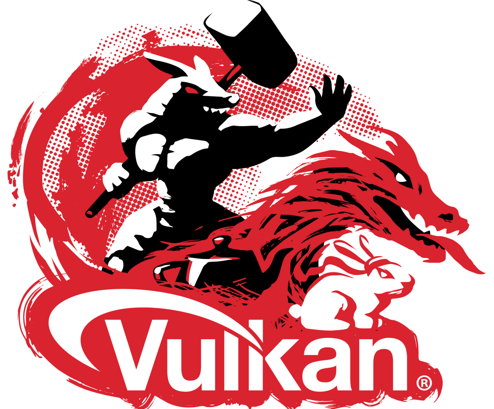

Bavimo se proucavanjem i istrazivanjem svih vulkana na nasoj planeti zemlji.Tu smo da vam prikazemo razlicite Vulkane i da nesto o njima naucimo!. Posedujemo tim strucnjaka koji se bavi vulanologijom i koji nam dostavljaju najsvezije informacije o vulkanima sirom sveta.
Etna (Muncibeddhu ili jednostavno iddhu na sicilijanskom) je aktivni vulkan u Italiji koji se nalazi na istočnoj obali Sicilije, blizu Mesine i Katanije. Etna je najviši vulkan u Evropi, koji se izdiže na 3.320 m nadmorske visine, doduše, treba spomenuti da visina vulkana varira zbog erupcija - Etna je za 51 m niža nego što je bila 1865. To je takođe i najviša planina u Italiji južno od Alpa i pokriva područje od 1.190 km². Etna je tri puta viša od Vezuva, koji se takođe nalazi u Italiji. Etna je jedan od najaktivnijih vulkana na svetu i skoro da je u neprekidnoj fazi erupcije. Iako je u više navrata izazivala ogromne štete, Etna se ne smatra vrlo opasnim vulkanom i hiljade ljudi žive u njenoj senci.
Krakatau je bilo malo ostrvo u Indoneziji koga je raznela snažna vulkanska erupcija. Ostrvo je bilo vulkanskog porekla, a eksplozija se dogodila 1883. godine. To je jedna od najpoznatijih eksplozija svih vremena. Erupcija je uništila ostrvo, a na tom mestu je danas ostrvo Rakatu.
YELLOWSTONE ili Jeloustonska kaldera je vulkanska kaldera u Nacionalnom parku Jelouston u SAD. Kaldera se nalazi u severozapadnom delu Vajominga, a njen najveći deo zahvata park Jelouston. Procenjena veličina prečnika kaldere se kreću od 55 km do 72 km koje je utvrdio Geološki institut SAD geološkim ispitivanjem terena koje je sprovela ekipa koju je predvodio Bob Kristijansen 60-ih i 70-ih godina 20. veka. Nakon emisije u okviru naučnog programa BBC 2005. godine, gde je skovan pojam supervulkan, ova kaldera naziva se i Supervulkan Jelouston.